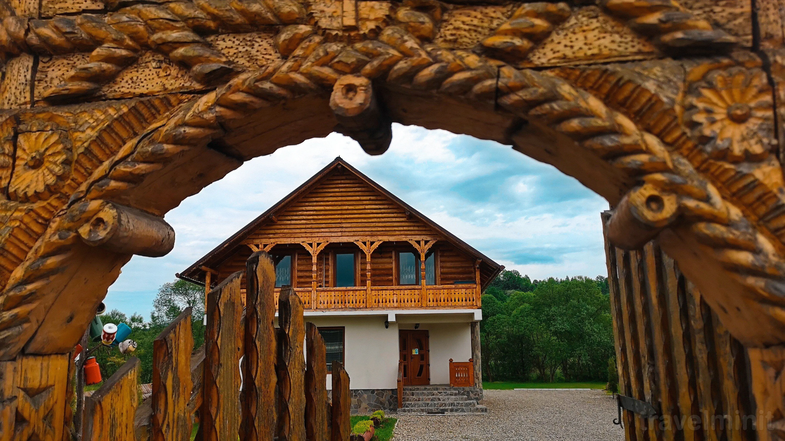

Descoperă autenticitatea Maramureșului la Pensiunea "Acasă în Maramureș". Trăiește tradiții, bucate alese și peisaje de poveste, simțind că te întorci acasă.
CONTACTPensiunea "Acasă în Maramureș" oferă o experiență autentică, unde tradiția locală se îmbină cu confortul modern. Fiecare oaspete este întâmpinat cu ospitalitate caldă, simțindu-se parte din povestea locului. Vă invităm să descoperiți frumusețea satului românesc, bisericile de lemn și peisajele de poveste, transformând fiecare moment petrecut aici în amintiri prețioase și de neuitat.
La noi nu ești turist, ci oaspete, întâmpinat cu zâmbet cald și atenție personalizată.
Bucură-te de momente de pace pe prispa casei, cu o cană de ceai în mână.
Descoperă biserici de lemn și tradiții păstrate cu sfințenie.
Bucură-te de plimbări la răsărit și explorarea peisajelor de poveste.
Seri cu bucate tradiționale, pâine coaptă și horincă limpede.
Camere cu farmec maramureșean, lemn sculptat și tot confortul modern.
La Pensiunea "Acasă în Maramureș" vei găsi tot confortul necesar pentru un sejur de neuitat.
Parcare privată în incinta pensiunii, fără rezervare prealabilă.
Internet wireless de mare viteză în toate spațiile pensiunii.
Cadă cu hidromasaj disponibilă la cerere, pentru relaxare completă.
Grădină generoasă cu terasă, foișor, grătar și zonă de picnic.
Bucătărie complet utilată și restaurant cu preparate tradiționale din produse certificate ECO.
Produse din gospodăria proprie și de la ferma locală, certificate ECO.
Teren de joacă amenajat. Copiii până la 14 ani cazează gratuit.
4 biciclete puse la dispoziție gratuit pentru plimbări în împrejurimi.
Sală de conferințe cu 20 de locuri, ideală pentru evenimente corporate.
Acceptăm Card de Vacanță: Sodexo, Pluxee, Up, Edenred.
Check-in: 14:00–22:00, Check-out: până la 10:00. Taxă oraș inclusă.
Română, Engleză, Spaniolă, Italiană — ne adaptăm oaspeților noștri.
Listă completă cu toate dotările și facilitățile pensiunii
Vino să ne vizitezi în inima Maramureșului, la poalele Munților Igniș.
Strada Principală 180, Sat Ferești
Comuna Giulești, Maramureș, 437162
47.837099, 23.939402
Pe DN18, la confluența râurilor Mara și Coșău, între Baia Mare și Sighetu Marmației.